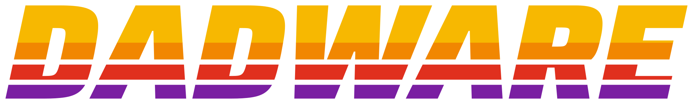

Why I made this
I built this to help my daughter understand what's taking up space on her Mac. I thought it could also teach her about how to use the terminal which is becoming cool again.

Free · Open source · Beta
Scans your Mac. Grades your storage. Tells you what to clean up.
Free and open source. It only looks. It never deletes anything.
On your phone? Ask Dad runs on a Mac. Email yourself the link.
I built this to help my daughter understand what's taking up space on her Mac. I thought it could also teach her about how to use the terminal which is becoming cool again.
Your largest files and folders, ranked by size.
Grades your storage from A to F. Free space, Downloads clutter, Photos library, the works.
Read-only. You figure out what you want to delete.
An easy to read report with insights so you can see what's taking up space.
macOS will probably ask if Ask Dad can look at your Desktop, Documents and Downloads. Click Allow so it can measure them. If you say no, that's fine. The report skips them and tells you so.
Apple keeps those locked up. To let Ask Dad measure them, turn on Full Disk Access yourself. No app can do it for you.
If you skip this, the report tells you what it couldn't see. It won't pretend it's zero.